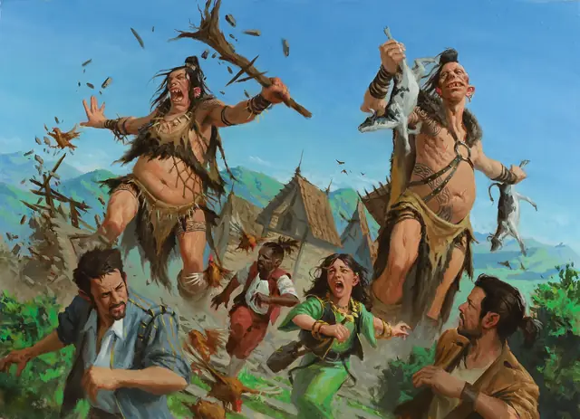

Холмовой великан
Hill Giant
Огромный Великан, Хаотичный Злой

Класс Защиты 13 Инициатива +2 (12)
Хиты 105 (10к12 + 40)
Скорость 40 футов
| мод | спас | ||
|---|---|---|---|
| СИЛ | 21 | +5 | +5 |
| ЛОВ | 8 | −1 | −1 |
| ТЕЛ | 19 | +4 | +4 |
| мод | спас | ||
|---|---|---|---|
| ИНТ | 5 | −3 | −3 |
| МДР | 9 | −1 | −1 |
| ХАР | 6 | −2 | −2 |
Чувства пассивное Восприятие 12
Языки Великаний
Опасность 5 (1 800 опыта; БВ +3)
Действия
Мультиатака. Великан совершает две атаки Вырванным деревом или Пригоршней мусора в любой комбинации.
Вырванное дерево. Бросок рукопашной атаки: +8, досягаемость 10 фт. Попадание: 18 (3к8 + 5) Дробящего урона. Если цель Большого размера или меньше, она становится Опрокинутой.
Пригоршня мусора. Бросок дальнобойной атаки: +8, дистанция 60/240 фт. Попадание: 16 (2к10 + 5) Дробящего урона, и цель становится Отравленной до конца своего следующего хода.
Бонус мастерства +3
Среда обитания Холмы
Сокровища Оружейные
Холмовой великан
Великан скал и долин
Холмовые великаны живут среди обрывистых утёсов и плоскогорий. Ростом они втрое выше большинства людей и обладают кожей и волосами самых разных оттенков, среди которых встречаются тона, напоминающие землю и мхи окрестных мест.
В потаённых долинах, у чистых водопадов и на богатых дичью склонах холмовые великаны обычно находят всё необходимое в щедрости природы. Чего дикая природа не даёт, то они мастерят сами — шьют одежду, делают орудия и оружие из камня, дерева и шкур.
При встрече с незнакомцами холмовые великаны могут проявлять подозрительность и оберегать свои владения, но порой их удаётся убедить поделиться изобильными дарами с путниками, которые готовы их чем-то порадовать или позабавить.
Бедствие, вторжение или нужда способны согнать холмовых великанов с обжитых мест в чужие земли. Некоторые изгнанные великаны крадут всё, что им нужно, или жаждут возмездия за потери, сея разрушение среди меньших народов. Другие начинают жизнь налётчиков или служат более сильным великанам в обмен на защиту.